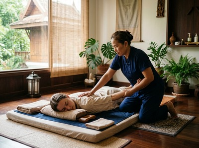
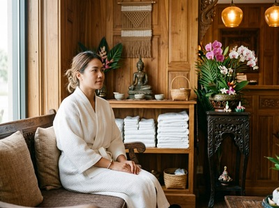

★★★★★ Quality gate failures: readability. Review and edit before removing this notice. ★★★★★
★★★★★ Quality gate failures: readability. Review and edit before removing this notice. ★★★★★
Thai massage in Cowcaddens is within easy reach for anyone living or studying in this corner of north-central Glasgow.
Cowcaddens sits just north of the city centre, bordered by Garnethill to the south-west and Townhead to the east. Glasgow Caledonian University shapes much of its character, alongside a mix of flats and the creative energy spilling over from nearby Speirs Locks. It is a neighbourhood of students, young professionals, and city workers who tend to move fast and, often, carry the tension to prove it.
Serendipity Massage Therapy & Wellness is well placed to serve the Cowcaddens community. The studio sits on Hope Street in Glasgow City Centre, a short journey south along a route most residents already know well. Whether you are a student winding down at the end of term, a professional working late, or someone who has been putting off giving their body the care it needs, the distance from Cowcaddens to Serendipity is no barrier at all.

You can book your session online in a few minutes and choose a time that fits your schedule, including evenings.
Serendipity offers a full range of treatments — both therapeutic and relaxing. Each one is delivered by a trained therapist using techniques developed by head therapist Jariya Malone.
The easiest route from Cowcaddens to Serendipity is on foot or by subway. Cowcaddens Subway Station is on Dundasvale Court. One stop south brings you to Buchanan Street or St Enoch — both a short walk from 93 Hope Street. The subway runs regularly throughout the day and into the evening, making it a reliable option at any time.
If you prefer to walk, Hope Street is roughly ten to fifteen minutes south of Cowcaddens. Head south through the top of the city centre and you will find it easily. Several bus routes also pass through Cowcaddens and into the city centre, including services on Garscube Road and Cowcaddens Road.
Serendipity is at Floor 1, Suite 50, Central Chambers, 93 Hope Street, Glasgow G2 6LD. Hope Street is one of the main north-south streets in the city centre and easy to find on foot from any direction.
Serendipity is a professional team practice — not a sole trader and not a chain. Every therapist is trained to the same standard using techniques developed by Jariya Malone. Those techniques draw from the traditional Thai massage tradition and are built for precise, repeatable results. That consistency matters when you want massage to be a regular part of how you manage tension, stress, or physical strain.

For Cowcaddens residents dealing with desk-driven neck pain, postural strain from long study hours, or the kind of quiet stress that settles in your shoulders, a regular session at Serendipity is practical — not indulgent. Book your first appointment and see what a properly trained therapist can do.
Cowcaddens was once a village that merged into Glasgow in 1846, with records of Cowcaddens Road going back to 1560. Today it is home to Glasgow Caledonian University, a growing number of residents, and the creative businesses gathering around Speirs Locks. For more on its history and geography, visit Cowcaddens on Wikipedia.
Cowcaddens is very close to Serendipity's studio on Hope Street. On foot it is roughly ten to fifteen minutes heading south through the top of the city centre. By subway, Cowcaddens Station is one stop from Buchanan Street — just a short walk from 93 Hope Street.
The Glasgow Subway from Cowcaddens Station is the quickest option. One stop south brings you to Buchanan Street or St Enoch, both within easy walking distance of Central Chambers on Hope Street. Several bus routes also connect Cowcaddens with the city centre if you prefer to travel above ground.
Same-day availability depends on the current schedule, but it is always worth checking online. You can view real-time availability and book your session directly through the website. Evening appointments are available, which works well for students and professionals in the Cowcaddens area.
Traditional Thai massage is a strong choice for anyone carrying tension from long hours of sitting or screen time. It uses assisted stretching and acupressure to release tight muscles in the neck, shoulders, and back. You stay fully clothed throughout. Thai Oil Massage is another popular option. It uses therapeutic oils to target the same areas with flowing, deeply relaxing pressure.
Serendipity is open seven days a week, with appointments available during the day and into the evening. The best way to check current availability is through the online booking system at serendipitymassage.co.uk. You can also call the studio on 0141 673 6630 if you would prefer to speak to someone directly.